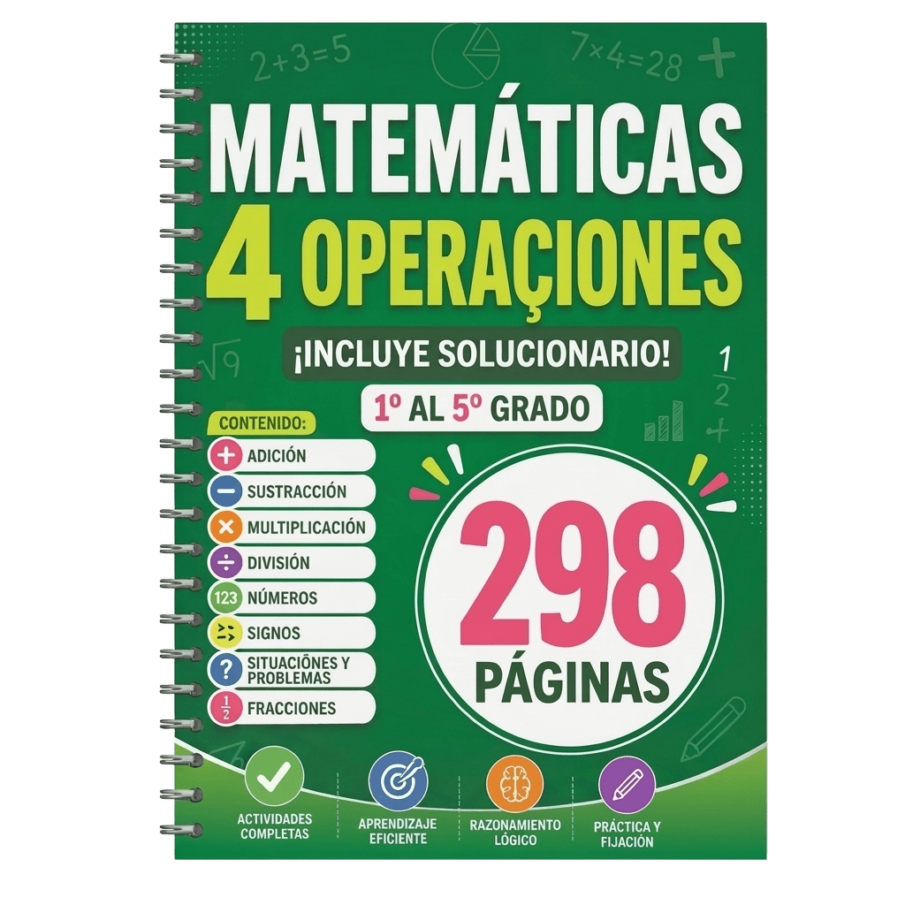
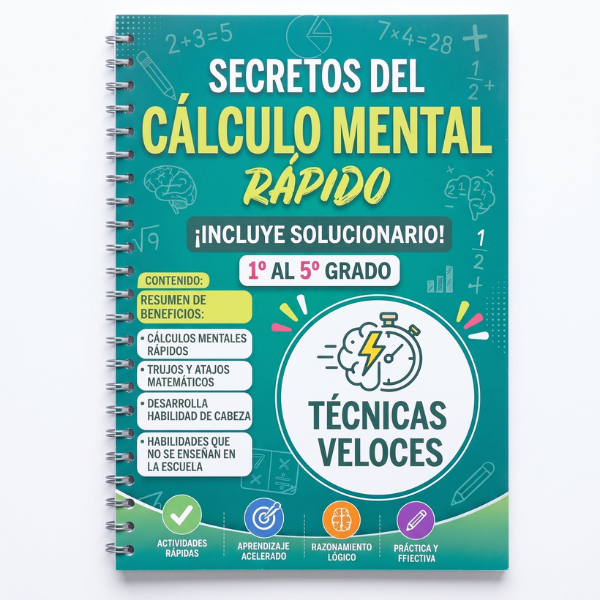
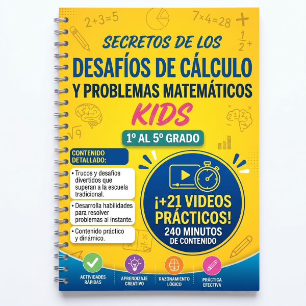

Resolución de problemas matemáticos: guía paso a paso para primaria
La resolución de problemas matemáticos es uno de los momentos que más frustra a los niños, y también a quienes los acompañamos. Muchas veces el niño ya sabe sumar, restar y multiplicar, pero frente a un enunciado se queda en blanco: no sabe por dónde empezar ni qué operación usar.
La buena noticia es que el problema casi nunca es el cálculo. Es la forma de leer y organizar la información. Con un método simple y un poco de práctica diaria, los problemas matemáticos dejan de ser un muro y se convierten en un reto alcanzable.
Resumen rápido: cómo interpretar un enunciado
- Leer dos veces: la primera para entender la historia, la segunda para buscar los datos.
- Subrayar con colores: un color para los números y otro para la pregunta final.
- Decirlo con sus palabras: si el niño puede explicar qué le piden, ya resolvió la mitad.
- Buscar palabras clave: “en total”, “quedan”, “cada uno” o “repartir” orientan hacia la operación correcta.
¿Por qué cuesta tanto la resolución de problemas matemáticos en primaria?
Resolver un problema no es solo hacer una cuenta. Exige que el niño ponga en juego tres habilidades al mismo tiempo:
- Pensamiento crítico: analizar el enunciado, identificar qué se pide y qué datos sirven (y cuáles sobran).
- Creatividad: encontrar un camino propio, ya sea con un dibujo, un esquema o contándolo en voz alta.
- Perseverancia: no rendirse si el primer intento no sale bien y aprender del error.
Por eso es clave proponer problemas para niños de primaria adecuados a su nivel: lo bastante desafiantes para que aprendan, pero alcanzables para que ganen confianza. Un problema imposible no enseña; solo refuerza la idea de “soy malo para las matemáticas”.
Método de 4 pasos para la solución de problemas matemáticos
El matemático George Pólya propuso un método que hoy se usa en escuelas de todo el mundo. Lo adaptamos en 4 pasos fáciles de aplicar en casa o en el aula.
Paso 1: Leer con atención y comprender
Pide al niño que lea el enunciado completo, sin lápiz en la mano. La primera lectura es para entender la historia: quién aparece, qué pasa y qué se quiere saber.
Después, hazle una pregunta simple: “¿Qué nos están preguntando?”. Si no puede responder con sus palabras, conviene leer otra vez antes de seguir.
Paso 2: Subrayar los datos y la pregunta
En la segunda lectura, el niño marca la información importante:
- Los números y lo que representan (manzanas, pesos, niños, días).
- La pregunta final, con otro color.
- Los datos que sobran, si los hay, tachados con una línea suave.
Organizar la información con un dibujo, una tabla o un esquema también ayuda mucho, sobre todo en los primeros grados.
Paso 3: Elegir la operación
Aquí está el corazón de la resolución de problemas matemáticos. Para decidir qué cuenta hacer, el niño puede apoyarse en algunas palabras clave del enunciado:
| Si el enunciado dice… | Probablemente sea… |
|---|---|
| en total, juntos, más, añade, ganó | Suma |
| quedan, perdió, gastó, diferencia, cuántos más | Resta |
| cada uno tiene, veces, grupos de, por cada | Multiplicación |
| repartir, partes iguales, cuántos le tocan | División |
Ojo: las palabras clave orientan, pero no reemplazan la comprensión. Siempre conviene preguntar: “¿La respuesta tiene que ser más grande o más chica que los números del problema?”.
Paso 4: Resolver y revisar
Con el plan claro, el niño hace los cálculos con orden. Luego viene el paso que más se olvida: revisar.
- ¿La respuesta tiene sentido con la pregunta?
- ¿Escribió la unidad? (no es “12”, son “12 caramelos”)
- ¿Puede comprobarlo con la operación inversa?
Y al final, algo que también enseña: felicitarlo por el esfuerzo, no solo por el resultado. 🎉
Estrategias extra para problemas de matemáticas para niños
Cuando el método de 4 pasos no alcanza, estas estrategias desbloquean al niño:
- Buscar un problema parecido: “¿Te recuerda a algún problema que ya resolviste?”.
- Usar números más pequeños: si el problema dice 248 caramelos, prueben primero con 8.
- Hacer un dibujo o esquema: solo con lo importante, sin decorar.
- Ensayo y error: probar una respuesta y ver si cumple el enunciado. Si no funciona, cambiar de camino.
- Trabajar hacia atrás: partir del resultado y reconstruir el camino, muy útil en problemas de “¿cuánto tenía al principio?”.
- Simplificar lo complicado: dividir un problema largo en preguntas más cortas.
Ejemplos de problemas para niños de primaria
Algunos ejemplos resueltos para practicar el método en casa:
1.º y 2.º grado: suma y resta
Problema: Lucía tiene 8 globos y su abuela le regala 5 más. ¿Cuántos globos tiene ahora?
Datos: 8 globos, 5 más. Pregunta: ¿cuántos tiene ahora? Operación: 8 + 5 = 13 globos.
3.º y 4.º grado: multiplicación
Problema: En una caja hay 6 filas de 4 lápices. ¿Cuántos lápices hay en la caja?
Datos: 6 filas, 4 lápices cada una. Operación: 6 × 4 = 24 lápices.
4.º y 5.º grado: problemas de dos pasos
Problema: Una maestra compra 3 paquetes de 12 galletas y las reparte en partes iguales entre 9 alumnos. ¿Cuántas galletas recibe cada uno?
Paso 1: 3 × 12 = 36 galletas. Paso 2: 36 ÷ 9 = 4 galletas para cada alumno.
Errores comunes al acompañar a los niños
💡 Ojo con estos errores comunes:
- Darle la operación: mejor preguntar “¿qué crees que hay que hacer?”.
- Saltarse la lectura: muchos errores vienen de leer rápido, no de calcular mal.
- Hojas larguísimas: 2 o 3 problemas bien entendidos valen más que 20 hechos a la carrera.
- Corregir sin explicar: revisar juntos el error convierte la equivocación en aprendizaje.
Practica con problemas listos para imprimir

Saber el método es el primer paso. Lo que realmente cambia el resultado es la práctica constante con problemas bien graduados. El Cuadernillo Matemáticas 4 Operaciones reúne más de 290 páginas de ejercicios y problemas de suma, resta, multiplicación y división, organizados del 1.º al 5.º grado.
Sin buscar fichas cada noche ni improvisar: imprimes y aplicas en casa o en el aula desde hoy.
Llévate el Cuadernillo Matemáticas 4 Operaciones por solo $9,99 (pago único).
🎁 Oportunidad exclusiva en el checkout: al hacer clic para comprar el cuadernillo, podrás sumar a tu pedido dos materiales complementarios. Su precio normal es de $9,99, pero en ese momento te llevas cada uno por solo $3,99. Están pensados para reforzar el cálculo y la resolución de problemas, y esta oferta solo aparece en el checkout.

Secretos del Cálculo Mental Rápido$9,99 $3,99

Desafíos de Cálculo y Problemas Matemáticos Kids$9,99 $3,99
Preguntas frecuentes
¿Cuáles son los pasos para resolver un problema matemático?
El método más usado tiene 4 pasos: comprender el problema (leer con atención e identificar qué se pregunta), idear un plan (subrayar los datos y elegir la operación), ejecutar el plan (hacer los cálculos con orden) y revisar (comprobar si la respuesta tiene sentido con la pregunta).
¿Por qué mi hijo sabe sumar y multiplicar pero no resuelve problemas?
Porque resolver problemas matemáticos exige comprensión lectora, además del cálculo. El niño necesita entender qué le pide el enunciado y traducirlo a una operación. Practicar con problemas cortos, subrayar datos y reconocer palabras clave ayuda a cerrar esa brecha.
¿Cuánto tiempo al día debe practicar un niño de primaria?
Entre 10 y 15 minutos diarios suelen ser suficientes. Es mejor resolver 2 o 3 problemas bien entendidos cada día que una hoja larga una vez por semana. La constancia y la revisión de los errores marcan la diferencia.
Conclusión: del enunciado a la confianza
La resolución de problemas matemáticos se aprende igual que cualquier otra habilidad: con un método claro y práctica diaria. Leer con atención, subrayar los datos, elegir la operación y revisar son cuatro hábitos que acompañarán al niño durante toda la primaria.
Si quieres que esa práctica sea simple y organizada, el Cuadernillo Matemáticas 4 Operaciones te da los ejercicios listos para imprimir, del 1.º al 5.º grado.